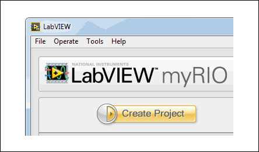
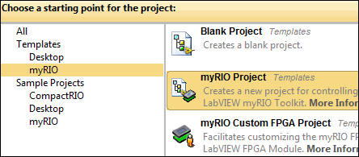
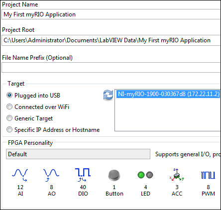
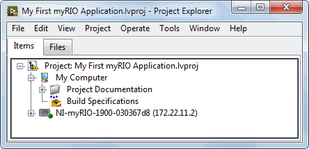

Creating Your First myRIO Application
This tutorial teaches you how to create your own application to control your myRIO onboard devices.
Part 1: Creating a myRIO Project
Before programming with the myRIO, you must first create a myRIO project. With a myRIO project, you can group together all the files relevant to your application and run VIs on the myRIO.
Complete the following steps to create a myRIO project by using the myRIO Project template, which is the simplest way to start programming with the myRIO.
 |
- Click the Create Project button in LabVIEW to display the Create Project dialog box.
|
 |
- Select Templates»myRIO from the project category.
- Select myRIO Project from the project list.
- Click Next to configure details of the project.
|
 |
- In the Project Name text box, enter My First myRIO Application.
- In the Project Root text box, enter the path to the directory for saving the project.
- (Optional) In the File Name Prefix text box, enter a prefix that distinguishes the copy of the template you create from additional copies of the template you create later.
- In the Target section, select the myRIO on which to run your application.
- The FPGA Personality section indicates that the myRIO Project template uses a default FPGA personality. Refer to the Choosing FPGA Personalities topic in the LabVIEW Help for information about FPGA personalities.
- Click Finish. LabVIEW saves the project and opens the Project Explorer window.
|
 |
- Explore the Project Explorer window. For example, expand items in the project tree to find Main.vi. Refer to the Project Documentation folder for detailed information about this myRIO project.
|
You have successfully created a myRIO project. Now, proceed to learn how to create applications based on the myRIO project.
Next